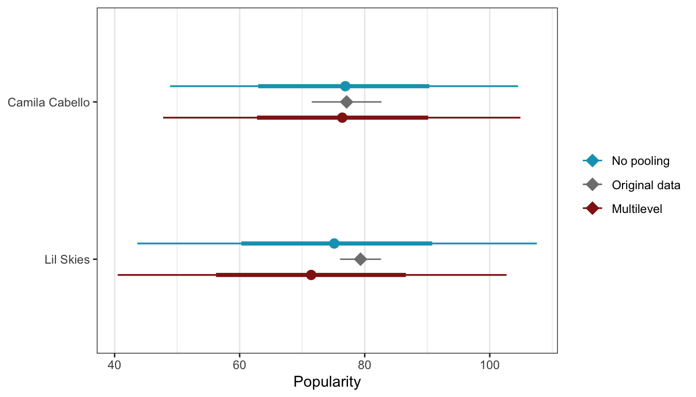

library(tidyverse)
library(brms)
library(rstanarm)
library(broom)
library(broom.mixed)
library(tidybayes)
library(patchwork)
library(scales)
# tikz stuff
# Necessary for using dvisvgm on macOS
# See https://www.andrewheiss.com/blog/2021/08/27/tikz-knitr-html-svg-fun/
Sys.setenv(LIBGS = "/usr/local/share/ghostscript/9.53.3/lib/libgs.dylib.9.53")
font_opts <- list(dvisvgm.opts = "--font-format=woff")
# Plot stuff
clrs <- MetBrewer::met.brewer("Lakota", 6)
theme_set(theme_bw())
# Tell bayesplot to use the Lakota palette for things like pp_check()
# bayesplot::color_scheme_set(clrs)
# Tell bayesplot to use the viridis rocket palette for things like pp_check()
viridisLite::viridis(6, option = "rocket", end = 0.85, direction = -1) |>
# Take off the trailing "FF" in the hex codes
map_chr(~str_sub(., 1, 7)) |>
bayesplot::color_scheme_set()
# Seed stuff
set.seed(1234)
BAYES_SEED <- 1234
# Data
data(spotify, package = "bayesrules")
spotify <- spotify %>%
select(artist, title, popularity) %>%
mutate(artist = fct_reorder(artist, popularity, .fun = mean))Reading notes
Hierarchical models without predictors
The general setup
The data in this example comes from a sample of music from Spotify. There are 350 songs by 44 different artists:
spotify |>
summarize(n_songs = n(),
n_artists = n_distinct(artist))
## # A tibble: 1 × 2
## n_songs n_artists
## <int> <int>
## 1 350 44
spotify |>
count(artist)
## # A tibble: 44 × 2
## artist n
## <fct> <int>
## 1 Mia X 4
## 2 Chris Goldarg 10
## 3 Soul&Roll 5
## 4 Honeywagon 3
## 5 Röyksopp 4
## 6 Freestyle 3
## 7 DA Image 3
## 8 Jean Juan 5
## 9 TV Noise 14
## 10 Kid Frost 3
## # … with 34 more rowsThe main thing we care about in this example is song popularity and its variation within and between artists. We’ll answer three different questions:
- What’s the typical popularity of a typical Spotify song?
- How much does popularity vary from artist to artist?
- For any single artist, how much does popularity vary from song to song?
Popularity is measured on a scale of 0–100, with 100 representing the highest popularity:
spotify %>%
group_by(artist) %>%
summarize(count = n(), popularity = mean(popularity)) |>
arrange(popularity)
## # A tibble: 44 × 3
## artist count popularity
## <fct> <int> <dbl>
## 1 Mia X 4 13.2
## 2 Chris Goldarg 10 16.4
## 3 Soul&Roll 5 24.2
## 4 Honeywagon 3 31.7
## 5 Röyksopp 4 33.2
## 6 Freestyle 3 33.7
## 7 DA Image 3 36.7
## 8 Jean Juan 5 36.8
## 9 TV Noise 14 38.1
## 10 Kid Frost 3 40.7
## # … with 34 more rowsHere’s how much these artists’ songs vary in popularity. Some are consistently popular with little variation within the artist, like Lil Skies and Sufjan Stevens; others like Kendrik Lamar have enormous variation. There are also patterns across/between artists—Beyoncé is clearly more popular than Honeywagon.
spotify |>
ggplot(aes(y = artist, x = popularity)) +
geom_point(color = "grey70", size = 0.75) +
stat_pointinterval(color = clrs[6], point_interval = "mean_qi") +
labs(x = "Popularity", y = NULL)We’ll analyze these questions with three different approaches:
- Complete pooling: Ignore artists and lump all songs together
- No pooling: Analyze each artist separately and assume that data from one artist has no information about any other artist
- Partial pooling (with multilevel models): Incorporate the grouping structure into the analysis “so that even though artists differ in popularity, they might share valuable information about each other and about the broader population of artists”
To be super mathy and formal about the structure of the data, we’ll use \(i\) to represent a song and \(j\) to represent an artist, where \(j \in \{1, 2, \dots, 44\}\), and \(n_j\) represents the number of songs each artist has (like Mia X is \(n_1 = 4\), Chris Goldarg is \(n_2 = 10\), and so on).
We can calculate the total sample size by adding all the \(n_j\)s together:
\[ n = \sum_{j = 1}^{44} n_j = n_1 + n_2 + \dots + n_{44} = 350 \]
That’s one level of the hierarchy—a count of artists with songs inside them.
We can also think about the songs themselves. Each song \(Y\) gets two subscripts for the song id and the artist id: \(Y_{i,j}\), where \(i \in \{1, 2, \dots, n_j\}\) and \(j \in \{1, 2, \dots, 44\}\)
When we look at the data at a song level, we can think of \(Y\) as a collection of all the songs by the 44 different artists, or:
\[ Y = \Bigl( (Y_{1_1}, Y_{2_1}, Y_{n_{1_1}}), (Y_{1_2}, Y_{2_2}, Y_{n_{2_2}}), \dots, (Y_{1_{44}}, Y_{2_{44}}, Y_{n_{{44}_{44}}}) \Bigr) \]
The data follows a hierarchical structure, with songs nested inside artists:
16.1: Complete pooled model
First we’ll do a pooled model where we ignore the fact that different (and often repeated) artists recorded these songs. We’ll pretend that these all came from 350 completely different independent artists. That means that instead of looking at the data like this:
\[ Y = \Bigl( (Y_{1_1}, Y_{2_1}, Y_{n_{1_1}}), (Y_{1_2}, Y_{2_2}, Y_{n_{2_2}}), \dots, (Y_{1_{44}}, Y_{2_{44}}, Y_{n_{{44}_{44}}}) \Bigr) \]
…we’ll look at it like this:
\[ Y = ( Y_1, Y_2, \dots, Y_{350} ) \]
Lumping everything together, here’s what the distribution of popularity looks like:
spotify |>
ggplot(aes(x = popularity)) +
geom_density(fill = clrs[1], color = NA) +
labs(x = "Popularity", y = "Density")We’ll use an intercept-only model to estimate the mean and variance of this distribution based on this official model and these priors:
- For \(\mu\), we’ll assume that an average song will have a popularity score of 50, but it could be somewhere between 10 and 90
- For \(\sigma\), we’ll assume that for all songs, popularity will vary with a standard deviation of 25 popularity points
\[ \begin{aligned} \text{Popularity}_{i,j} &\sim \mathcal{N}(\mu, \sigma) \\ \\ \mu &\sim \mathcal{N}(50, 20) \\ \sigma &\sim \operatorname{Exponential}(1/25) \end{aligned} \]
We’ll do it both with brms and rstanarm:
priors <- c(prior(normal(50, 20), class = Intercept),
prior(exponential(0.04), class = sigma))
model_pooled_brms <- brm(
bf(popularity ~ 1),
data = spotify,
family = gaussian(),
prior = priors,
chains = 4, cores = 4, iter = 4000, seed = BAYES_SEED,
backend = "cmdstanr", refresh = 0,
file = "16-manual_cache/model-pooled-brms"
)model_pooled_brms |>
tidy(effects = c("fixed", "ran_pars"), conf.level = 0.8) |>
select(-component, -group)
## # A tibble: 2 × 6
## effect term estimate std.error conf.low conf.high
## <chr> <chr> <dbl> <dbl> <dbl> <dbl>
## 1 fixed (Intercept) 58.4 1.12 56.9 59.8
## 2 ran_pars sd__Observation 20.7 0.782 19.7 21.7model_pooled_rstanarm <- stan_glm(
popularity ~ 1,
data = spotify,
family = gaussian,
prior_intercept = normal(50, 20),
prior_aux = exponential(0.04),
chains = 4, iter = 5000*2, seed = BAYES_SEED, refresh = 0
)model_pooled_rstanarm |>
tidy(effects = c("fixed", "aux"),
conf.int = TRUE, conf.level = 0.8) |>
filter(term != "mean_PPD")
## # A tibble: 2 × 5
## term estimate std.error conf.low conf.high
## <chr> <dbl> <dbl> <dbl> <dbl>
## 1 (Intercept) 58.4 1.09 57.0 59.8
## 2 sigma 20.7 0.785 19.7 21.7These results mean that Spotify songs have an average popularity rating (\(\mu\)) of 58.36 points. The \(\sigma\) implies that the score bounces around from song to song with a variance of 20.71 points.
We can see how this model predicts popularity if we plug in the average popularities for each of the artists and see the predicted values. The point ranges here represent the posterior predictions for each artist; the red diamonds show the actual average popularity. This isn’t that great—the model treats every artist as the same, so there are no differences in predictions across artists.
pooled_predictions <- spotify |>
group_by(artist) |>
summarize(popularity = mean(popularity)) |>
add_predicted_draws(model_pooled_brms)
pooled_predictions |>
ggplot(aes(y = artist, x = .prediction)) +
stat_pointinterval(color = clrs[1]) +
stat_summary(data = spotify, aes(x = popularity),
geom = "point", fun = mean, color = clrs[3], size = 3, pch = 18) +
labs(x = "Popularity", y = NULL)16.2: No pooled model
As we saw above, the pooled model isn’t great because it erases artist effects. Average popularity and variability in popularity vary substantially across artists. So instead of pretending that there’s a global mean popularity level, we’ll look at group/artist-specific averages instead. Rather than looking at the data like this:
\[ Y = \Bigl( (Y_{1_1}, Y_{2_1}, Y_{n_{1_1}}), (Y_{1_2}, Y_{2_2}, Y_{n_{2_2}}), \dots, (Y_{1_{44}}, Y_{2_{44}}, Y_{n_{{44}_{44}}}) \Bigr) \]
…we’ll look at it like this:
\[ \begin{aligned} Y_{j = 1} &= ( Y_1, Y_2, \dots, Y_{n, j = 1} ) \\ Y_{j = 2} &= ( Y_1, Y_2, \dots, Y_{n, j = 2} ) \\ & \dots \\ Y_{j = 44} &= ( Y_1, Y_2, \dots, Y_{n, j = 44} ) \\ \end{aligned} \]
That gives us this formal model:
\[ \begin{aligned} Y_{i, j} &\sim \mathcal{N}(\mu_j, \sigma) \\ \\ \mu_j &\sim \mathcal{N}(50, 20) \\ \sigma &\sim \operatorname{Exponential}(1/25) \end{aligned} \]
This implies that the popularity of all songs \(i\) is normally distributed around some group mean \(\mu_j\) with standard deviation \(\sigma\) within each artist.
This also implies that
- every song \(i\) by the same artist \(j\) has the same mean \(\mu_j\)
- songs by different artists like \(j\) and \(k\) have different group averages \(\mu_j\) and \(\mu_k\), so each artist’s \(\mu_j\) is unique and doesn’t tell us anything about other artists’ \(\mu_j\)s
- the \(\sigma\) term is technically still pooled across all songs; we could use artist-specific \(\sigma_j\) terms if we wanted, but that would make life too complex
Modeling time. This time instead of estimating 44 separate models like we did in the previous chapter, we can get rid of the global intercept term in the model formula by using popularity ~ 0 + artist (in the book they use popularity ~ artist - 1, but I like the 0 + artist syntax since the 0 is in the spot where \(\beta_0\) would normally go and it feels like it lines up with the model syntax better).
priors <- c(prior(normal(50, 20), class = b),
prior(exponential(0.04), class = sigma))
model_no_pooled_brms <- brm(
bf(popularity ~ 0 + artist),
data = spotify,
family = gaussian(),
prior = priors,
chains = 4, cores = 4, iter = 4000, seed = BAYES_SEED,
backend = "cmdstanr", refresh = 0,
file = "16-manual_cache/model-no-pooled-brms"
)model_no_pooled_brms |>
tidy(effects = c("fixed", "ran_pars"), conf.level = 0.8) |>
group_by(effect) |>
slice(1:3) |>
select(-component, -group)
## # A tibble: 4 × 6
## # Groups: effect [2]
## effect term estimate std.error conf.low conf.high
## <chr> <chr> <dbl> <dbl> <dbl> <dbl>
## 1 fixed artistMiaX 17.2 6.73 8.66 25.8
## 2 fixed artistChrisGoldarg 18.0 4.37 12.4 23.6
## 3 fixed artistSoul&Roll 26.5 5.94 18.9 34.1
## 4 ran_pars sd__Observation 14.0 0.562 13.3 14.7model_no_pooled_rstanarm <- stan_glm(
popularity ~ 0 + artist,
data = spotify,
family = gaussian,
prior = normal(50, 20),
prior_aux = exponential(0.04),
chains = 4, iter = 5000*2, seed = BAYES_SEED, refresh = 0
)model_no_pooled_rstanarm |>
tidy(effects = c("fixed", "aux"),
conf.int = TRUE, conf.level = 0.8) |>
filter(term != "mean_PPD") |>
slice(1:3, 45)
## # A tibble: 4 × 5
## term estimate std.error conf.low conf.high
## <chr> <dbl> <dbl> <dbl> <dbl>
## 1 artistMia X 17.3 6.66 8.67 25.8
## 2 artistChris Goldarg 18.0 4.28 12.5 23.5
## 3 artistSoul&Roll 26.5 5.92 18.9 34.0
## 4 sigma 14.0 0.565 13.3 14.7These models give us one coefficient for each artist, representing the artist average, or \(\mu_j\). In the output above I show just the first three artists’ means. We also get a global \(\sigma\) of 13.99 points.
As before, we can see how this model predicts popularity if we plug in the average popularities for each of the artists and see the predicted values. Again, these point ranges represent the posterior predictions for each artist; the red diamonds show the actual average popularity. This time things seem to fit really well—that’s because the model is designed to predict the artist-specific \(\mu_j\) averages.
But this great apparent fit comes at a cost:
- No information is shared across these artists. This is equivalent to running 44 separate models and showing them all in one plot. The number of songs and artist has in the data could influence overall popularity, but since each artist is in an informational silo here, we can’t see if that’s the case.
- The fit is hyper-specific to artists in the sample and can’t be used to predict the popularity of other artists.
no_pooled_predictions <- spotify |>
group_by(artist) |>
summarize(popularity = mean(popularity)) |>
add_predicted_draws(model_no_pooled_brms)
no_pooled_predictions |>
ggplot(aes(y = artist, x = .prediction)) +
stat_pointinterval(color = clrs[5], point_interval = "mean_qi") +
stat_summary(data = spotify, aes(x = popularity),
geom = "point", fun = mean, color = clrs[2], size = 3, pch = 18) +
labs(x = "Popularity", y = NULL)16.3: Building the hierarchical model
We can can overcome these shortcomings of the no pooled model by incorporating the group structure into the model and allowing information to be shared across different artist groups. The formal math gets a little bit more gnarly, and there are different ways of describing the models. Bayes Rules! shows two different approaches.
Layer-based notation
First they show a model with two layers: one layer that models the popularity of songs within artists and one layer that models the variability of popularity between arists:
\[ \begin{aligned} Y_{i,j} &\sim \mathcal{N}(\mu_j, \sigma_y) & \text{Individual songs within artist } j \\ \mu_j &= \mathcal{N}(\mu, \sigma_{\mu}) & \text{Between-artist differences} \\ \\ \mu &\sim \mathcal{N}(50, 20) & \text{Prior for global average} \\ \sigma_y &\sim \operatorname{Exponential}(1/25) & \text{Prior for within-artist variability} \\ \sigma_{\mu} &\sim \operatorname{Exponential}(1) & \text{Prior for between-artist variability} \end{aligned} \]
In the first layer, we’re modeling the popularity of individual songs within each artist \(j\). We have two parameters:
- \(\mu_j\): mean song popularity for artist \(j\)
- \(\sigma_y\): within-group variability, or the standard deviation of popularity within each artist
In the second layer, we’re modeling the variability of popularity across or between artists. We have two different parameters for this part of the model:
- \(\mu\): global average of mean song popularity across all artists \(j\)
- \(\sigma_\mu\): between-group variability, or the standard deviation in mean popularity \(\mu_j\) from artist to artist, or how much popularity bounces around as we move from artist to artist
Offset-based notation
I like this notation better (and it’s what I use here). It’s still focused on layers—the first line is the same in both model definitions. The second layer is different now, though:
\[ \begin{aligned} Y_{i,j} &\sim \mathcal{N}(\mu_j, \sigma_y) & \text{Individual songs within artist } j \\ \mu_j &= (\mu + b_j) & \text{Between-artist differences} \\ b_j &\sim \mathcal{N}(0, \sigma_{\mu}) & \text{Random artist offsets} \\ \\ \mu &\sim \mathcal{N}(50, 20) & \text{Prior for global average} \\ \sigma_y &\sim \operatorname{Exponential}(1/25) & \text{Prior for within-artist variability} \\ \sigma_{\mu} &\sim \operatorname{Exponential}(1) & \text{Prior for between-artist variability} \end{aligned} \]
In the second layer, we’re still modeling the variability across artists (\(\mu_j\)), but we have a new parameter \(b_j\). This requires some short explanation to show where this is coming from.
Let’s think about song popularity like a slope/intercept regression model with \(\beta\) terms instead of with \(\mu\). Since this is an intercept-only model, we just have a \(\beta_0\) term:
\[ \text{Popularity}_j = \beta_{0_\text{Global artist mean}} + \varepsilon \]
Note the \(\varepsilon\) term here. We haven’t been using that throughout this book, but it’s always been lurking there. It’s the error term and represents all the variation in popularity that isn’t captured by the global artist mean. Right now the \(\beta_0\) coefficient represents the global average of artist-specific averages. Any deviance from that is stuffed away in \(\varepsilon\).
Here’s an example to help illustrate this. \(\mu_j\) represents artist-specific averages, and Beyoncé’s average popularity (\(\mu_\text{Beyoncé}\)) is 69.7:
artist_averages <- spotify |>
group_by(artist) |>
summarise(mu_j = mean(popularity))
artist_averages |>
filter(artist == "Beyoncé")
## # A tibble: 1 × 2
## artist mu_j
## <fct> <dbl>
## 1 Beyoncé 69.7The global mean artist-specific popularity is the average of the mu_j column, or 52.1
artist_averages |>
summarise(global_mu = mean(mu_j))
## # A tibble: 1 × 1
## global_mu
## <dbl>
## 1 52.1An intercept-only model of popularity using only artist-specific averages would look something like this:
\[ \text{Popularity}_j = 52.1 + \varepsilon \]
Beyoncé’s average popularity is 17.6 points higher than the global average of 52.1, but that’s lost in the error term. We can highlight it to show that it really exists:
\[ \text{Popularity}_\text{Beyoncé} = 52.1 + (17.6_\text{Beyoncé} + \varepsilon) \]
With some algebra, we can group that Beyoncé offset with the global mean:
\[ \text{Popularity}_\text{Beyoncé} = (52.1 + 17.6_\text{Beyoncé}) + \varepsilon \]
Neat. Beyoncé’s artist-specific average is thus the global mean plus an artist-specific offset.
We can generalize this to any artist \(j\). We’ll call the offset term \(b_j\):
\[ \text{Popularity}_j = (\beta_0 + b_j) + \varepsilon \]
Or if we want to go back to the world of \(\mu\) instead of \(\beta\)s:
\[ \text{Popularity}_j = (\mu + b_j) \]
Phew. I like this offset approach because it highlights the fact that these are “random” effects, or that we’re modeling the distribution of group-specific shifts above and below some global mean. Here’s the full model again, for reference:
\[ \begin{aligned} Y_{i,j} &\sim \mathcal{N}(\mu_j, \sigma_y) & \text{Individual songs within artist } j \\ \mu_j &= (\mu + b_j) & \text{Between-artist differences} \\ b_j &\sim \mathcal{N}(0, \sigma_{\mu}) & \text{Random artist offsets} \\ \\ \mu &\sim \mathcal{N}(50, 20) & \text{Prior for global average} \\ \sigma_y &\sim \operatorname{Exponential}(1/25) & \text{Prior for within-artist variability} \\ \sigma_{\mu} &\sim \operatorname{Exponential}(1) & \text{Prior for between-artist variability} \end{aligned} \]
16.3.3: Within- vs between-group variability
Since these multilevel/hierarchical/random effects/whatever-we-want-to-call-them models give us so much information about the variability within and between groups, we can do some neat things with that information.
For instance, the total variance in individual song popularity within and between artists is the sum of the two \(\sigma\) terms we’ve estimated:
\[ \operatorname{Var}(Y_{i, j}) = \sigma_y + \sigma_\mu \]
This means we can calculate some ratios and percentages:
- \(\frac{\sigma_y}{\sigma_y + \sigma_\mu}\): Proportion of total variance that is explained by within-artist differences
- \(\frac{\sigma_\mu}{\sigma_y + \sigma_\mu}\): Proportion of total variance that is explained by between-artist differences
16.4: Posterior analysis
K, finally we can calculate the posterior. To add a random intercept, or allow the intercept to vary by artist-specific offsets (yay for the offset notation!), we include a (1 | artist) term in both brms and rstanarm (and this table is indispensable for remembering how to set different random offsets for different nesting and grouping structures)
priors <- c(prior(normal(50, 20), class = Intercept),
prior(exponential(0.04), class = sigma),
prior(exponential(1), class = sd))
model_multilevel_brms <- brm(
bf(popularity ~ (1 | artist)),
data = spotify,
family = gaussian(),
prior = priors,
chains = 4, cores = 4, iter = 4000, seed = BAYES_SEED,
backend = "cmdstanr", refresh = 0,
file = "16-manual_cache/model-multilevel-brms"
)model_multilevel_brms |>
tidy(effects = c("fixed", "ran_pars"), conf.level = 0.8) |>
select(-component)
## # A tibble: 3 × 7
## effect group term estimate std.error conf.low conf.high
## <chr> <chr> <chr> <dbl> <dbl> <dbl> <dbl>
## 1 fixed <NA> (Intercept) 52.5 2.17 49.8 55.3
## 2 ran_pars artist sd__(Intercept) 12.6 1.39 10.9 14.5
## 3 ran_pars Residual sd__Observation 14.1 0.584 13.3 14.8# Put the results in a list
m_mlm <- model_multilevel_brms |>
tidy(effects = c("fixed", "ran_pars"), conf.level = 0.8) |>
mutate(term = janitor::make_clean_names(term)) |>
split(~term)The decov() prior for \(\sigma_\mu\) here is weird—it’s equivalent to exponential(1) in the case since we have no predictors.
model_multilevel_rstanarm <- stan_glmer(
popularity ~ (1 | artist),
data = spotify,
family = gaussian,
prior_intercept = normal(50, 20),
prior_aux = exponential(0.04),
prior_covariance = decov(reg = 1, conc = 1, shape = 1, scale = 1),
chains = 4, iter = 5000*2, seed = BAYES_SEED, refresh = 0
)model_multilevel_rstanarm |>
tidy(effects = c("fixed", "ran_pars"),
conf.int = TRUE, conf.level = 0.8)
## # A tibble: 3 × 6
## term estimate std.error conf.low conf.high group
## <chr> <dbl> <dbl> <dbl> <dbl> <chr>
## 1 (Intercept) 52.4 2.40 49.2 55.6 <NA>
## 2 sd_(Intercept).artist 15.2 NA NA NA artist
## 3 sd_Observation.Residual 14.0 NA NA NA Residual(Weirdly rstanarm and brms give different results for the between-artist \(\sigma_mu\) term sd_(Intercept). I don’t know why—probably a prior thing?)
Global parameters (“fixed” effects)
At the global level of the model, we have these terms:
- \(\mu\) or
(Intercept): Global average artist-specific popularity - \(\sigma_y\) or
sd__(Intercept)forartist: Within-artist variability - \(\sigma^2_\mu\) or
sd__ObservationforResidual: Between-artist variability
The average artist has a posterior average (\(\mu\)) of 52.5 popularity points, and there’s an 80% chance that their average popularity is between 49.8 and 55.3
According to the posterior mean of \(\sigma_y\) or sd__(Intercept), the between-artist variability is 12.6, which means that popularity bounces around by 12ish points as we move from artist to artist. The posterior mean of \(\sigma^2_\mu\) or sd__Observation shows that the within-artist variability is 14.1, which means that within any artist, popularity varies by 14ish points from song to song. Alternatively, this is the total residual variation, or the unexplained variation in song popularity.
We can play with the ratios of these types of variance too:
# Proportion of song popularity explained by differences *between* artists
(m_mlm$sd_intercept$estimate^2 /
(m_mlm$sd_intercept$estimate^2 + m_mlm$sd_observation$estimate^2)) |>
unname()
## [1] 0.4450867
# Proportion of song popularity explained by differences *within* artists
(m_mlm$sd_observation$estimate^2 /
(m_mlm$sd_intercept$estimate^2 + m_mlm$sd_observation$estimate^2)) |>
unname()
## [1] 0.5549133Group parameters (“random” effects)
At the artist level of the model, we only have one term:
- \(b_j\) or
(Intercept): Artist-specific offset from the global mean popularity \(\mu\)
We can extract these offsets with the ranef() function, which returns a messy gross array, or we can use broom.mixed::tidy(..., effects = "ran_vals"). Let’s look at Beyoncé’s offset, since we used that as an example earlier. It should be somewhere around 17.6 (though not exactly that, since that was the value from the no pooling model—we have more information about artists this time, so that should influence the estimated artist average here).
model_multilevel_brms |>
tidy(effects = "ran_vals", conf.level = 0.8) |>
filter(level == "Beyoncé") |>
select(-effect, -component)
## # A tibble: 1 × 7
## group level term estimate std.error conf.low conf.high
## <chr> <chr> <chr> <dbl> <dbl> <dbl> <dbl>
## 1 artist Beyoncé (Intercept) 16.4 3.43 11.9 20.7The offset is a little smaller (16ish) now that we’re partially pooling, and there’s an 80% chance that her offset is between 12 and 21ish popularity points from the global average.
We can look at everyone’s offsets and calculate artist-specific posterior group averages, or \(\mu_j\) with some tidybayes wrangling:
model_multilevel_brms |>
spread_draws(b_Intercept, r_artist[artist,]) |>
mutate(mu_j = b_Intercept + r_artist) |>
ungroup() |>
mutate(artist = fct_reorder(artist, mu_j, .fun = mean)) |>
ggplot(aes(y = artist, x = mu_j)) +
stat_pointinterval(color = clrs[3]) +
labs(x = "Popularity", y = NULL)16.5: Posterior prediction
Because we used a hierarchical model, we aren’t limited to making predictions for only the artists that exist in the original data. We can use the model to make predictions both for existing artists and for brand new unseen artists
Predictions for existing groups / artists
There are multiple forms of uncertainty in this model at both the global and artist levels. Like I explore in this guide to different posterior predictions, we have uncertainty in \(mu_j\), or the artist-specific average, and uncertainty in \(Y\), or the song-specific average.
The posterior predictions for \(mu_j\) will be narrow than those for \(Y\) because \(mu_j\) is only a function of the global \(\mu\) and artist-specific offsets \(b_j\):
\[ \mu_j = \mu + b_j \]
This corresponds to posterior_linpred() or posterior_epred().
The posterior predictions for \(Y\) have much more uncertainty because \(Y\) is a function of both \(\mu_j\) and \(\sigma_y\), or the within-artist variability:
\[ Y_{i,j} \sim \mathcal{N}(\mu_j, \sigma_y) \]
This corresponds to posterior_predict().
We can make these posterior predictions both manually and with the more automatic functions. We’ll predict Frank Ocean’s popularity since that’s what the book does.
Manually we need to get the intercept, offset, and sigma from the MCMC chains, add the intercept and offset to create \(\mu_j\), and then randomly draw from a normal distribution with that \(\mu_j\) and \(\sigma_y\):
ocean_posterior_preds <- model_multilevel_brms %>%
spread_draws(b_Intercept, r_artist[artist,], sigma) |>
filter(artist == "Frank.Ocean") |>
mutate(mu_ocean = b_Intercept + r_artist,
y_ocean = rnorm(n(), mean = mu_ocean, sd = sigma))
ocean_posterior_preds |>
ggplot(aes(x = y_ocean)) +
stat_halfeye(fill = clrs[3]) +
labs(x = "Posterior predictive distribution for the\npopularity of one new Frank Ocean song")model_multilevel_brms |>
predicted_draws(newdata = tibble(artist = "Frank Ocean")) |>
ggplot(aes(x = .prediction)) +
stat_halfeye(fill = clrs[3]) +
labs(x = "Posterior predictive distribution for the\npopularity of one new Frank Ocean song")Looking at the posterior distribution of just \(\mu_j\) gives us a narrower range, since this corresponds to our prediction of Frank Ocean’s underlying average song popularity, not the popularity of a single song:
ocean_posterior_preds |>
ggplot(aes(x = mu_ocean)) +
stat_halfeye(fill = clrs[2]) +
labs(x = "Posterior predictive distribution for the\nmean popularity of Frank Ocean songs")model_multilevel_brms |>
linpred_draws(newdata = tibble(artist = "Frank Ocean")) |>
ggplot(aes(x = .linpred)) +
stat_halfeye(fill = clrs[2]) +
labs(x = "Posterior predictive distribution for the\nmean popularity of Frank Ocean songs")
Predictions for unseen groups / artists
If we want to simulate a posterior for a completely unobserved artist, we can’t just extract their offset, add it to the global mean, and use rnorm(). There’s no offset to extract!
So instead we have to simulate the offset. We estimated a posterior distribution for \(\sigma_\mu\) for the variability in the offsets:
\[ b_j \sim \mathcal{N}(0, \sigma_{\mu}) \]
…so we can use that to generate a random offset, then add that to the global mean, and then make predictions like normal. In the book they make up an artist named “Mohsen Beats” so we’ll do that here too.
When doing this automatically, we need to include re_formula = NULL and allow_new_levels = TRUE to incorporate the random effects into the predictions (see here for more about that). We also use sample_new_levels = "gaussian" to indicate that the random offsets we’re adding in for the new fake artist come from a normal distribution (just like we do with rnorm()). It’s also possible to use sample_new_levels = "uncertainty" (and I think that’s the default?), which doesn’t use rnorm() to generate the offsets but instead somehow uses the uncertainty and variation in the existing groups to create the offsets.
mohsen_posterior_preds <- model_multilevel_brms %>%
spread_draws(b_Intercept, sd_artist__Intercept, sigma) |>
mutate(sigma_mu = sd_artist__Intercept,
mu_mohsen = b_Intercept + rnorm(n(), mean = 0, sd = sigma_mu),
y_mohsen = rnorm(n(), mean = mu_mohsen, sd = sigma))
mohsen_posterior_preds |>
ggplot(aes(x = y_mohsen)) +
stat_halfeye(fill = colorspace::darken(clrs[3], 0.7)) +
labs(x = "Posterior predictive distribution for the\npopularity of one new Mohsen Beats song")model_multilevel_brms |>
predicted_draws(newdata = tibble(artist = "Mohsen Beats"),
re_formula = NULL, allow_new_levels = TRUE,
sample_new_levels = "gaussian") |>
ggplot(aes(x = .prediction)) +
stat_halfeye(fill = colorspace::darken(clrs[3], 0.7)) +
labs(x = "Posterior predictive distribution for the\npopularity of one new Mohsen Beats song")We can also get the posterior distribution of just the \(\mu_j\) part for Mohsen Beats, providing a prediction of the artist’s average song popularity:
mohsen_posterior_preds |>
ggplot(aes(x = mu_mohsen)) +
stat_halfeye(fill = colorspace::darken(clrs[2], 0.5)) +
labs(x = "Posterior predictive distribution for the\nmean popularity of Mohsen Beats songs")model_multilevel_brms |>
linpred_draws(newdata = tibble(artist = "Mohsen Beats"),
re_formula = NULL, allow_new_levels = TRUE,
sample_new_levels = "gaussian") |>
ggplot(aes(x = .linpred)) +
stat_halfeye(fill = colorspace::darken(clrs[2], 0.5)) +
labs(x = "Posterior predictive distribution for the\nmean popularity of Mohsen Beats songs")Comparisons
For fun, we can compare all four of these posteriors:
p1 <- model_multilevel_brms |>
predicted_draws(newdata = tibble(artist = c("Frank Ocean", "Mohsen Beats")),
re_formula = NULL, allow_new_levels = TRUE,
sample_new_levels = "gaussian") |>
ggplot(aes(x = .prediction, y = artist, fill = artist)) +
stat_halfeye() +
scale_fill_manual(values = c(clrs[3], colorspace::darken(clrs[3], 0.7)),
guide = "none") +
labs(x = "Posterior predictions for individual songs (Yij)\n(equivalent to posterior_predict()",
y = NULL)
p2 <- model_multilevel_brms |>
linpred_draws(newdata = tibble(artist = c("Frank Ocean", "Mohsen Beats")),
re_formula = NULL, allow_new_levels = TRUE,
sample_new_levels = "gaussian") |>
ggplot(aes(x = .linpred, y = artist, fill = artist)) +
stat_halfeye() +
scale_fill_manual(values = c(clrs[2], colorspace::darken(clrs[2], 0.5)),
guide = "none") +
labs(x = "Posterior predictions for artist average (µj)\n(equivalent to posterior_linpred()",
y = NULL)
p1 | p216.6: Shrinkage and the bias-variance tradeoff
We’ve been talking about how information is shared across artists in these hierarchical models, and that’s why they’re better than the no pooling approach, but what information actually gets shared? In these intercept-only models, there aren’t any other covariates that are spread across artists (like age of artist, number of years producing music, gender, income, whatever) that could inform between-artist variation. All we have is the artist name.
Even with the artist name, we’re still sharing information across artists, but in a more subtle way. The average popularity for each artist is heavily informed by the number of songs each artist has. Artists with just a handful of songs might have high popularity, but that average is really unstable; artists with lots of songs and who are also highly popular have a much more stable average.
(This is like Amazon ratings too: an item on Amazon with a 4.6 star average with 10,000 reviews is more trustworthy than an item with a 4.8 star average with 4 reviews)
In the book they compare the ratings and counts of Camila Cabello (38 songs) and Lil Skies (3 songs):
spotify |>
filter(artist %in% c("Camila Cabello", "Lil Skies")) |>
group_by(artist) |>
summarize(count = n(), popularity = mean(popularity))
## # A tibble: 2 × 3
## artist count popularity
## <fct> <int> <dbl>
## 1 Camila Cabello 38 77.1
## 2 Lil Skies 3 79.3In a model without pooling, Lil Skies’s average remains high because it ignores the effect of artist-specific sample size, but hierarchical models care about the number of songs within each artist, and that influences the predicted average for artists with fewer songs. That’s the information sharing we get in an intercept-only model.
We can compare the predictions from the no pooling and multilevel models for these two to see the smaller prediction after sharing information in the hierarchical model:
no_pooled_small <- no_pooled_predictions |>
filter(artist %in% c("Camila Cabello", "Lil Skies")) |>
mutate(model_type = "No pooling") |>
ungroup() |>
select(artist, .row, .chain, .iteration, .draw, .prediction, model_type)
multilevel_small <- model_multilevel_brms |>
predicted_draws(newdata = tibble(artist = unique(spotify$artist))) |>
filter(artist %in% c("Camila Cabello", "Lil Skies")) |>
mutate(model_type = "Multilevel") |>
ungroup() |>
select(artist, .row, .chain, .iteration, .draw, .prediction, model_type)
both_small <- rbind(no_pooled_small, multilevel_small)
actual_small <- spotify |>
filter(artist %in% c("Camila Cabello", "Lil Skies"))
both_small |>
ggplot(aes(x = .prediction, y = fct_rev(artist), color = model_type)) +
stat_pointinterval(position = position_dodge(width = 0.4)) +
stat_summary(data = actual_small,
aes(x = popularity, color = "Original data"),
fun.data = "mean_se", fun.args = list(mult = 1.96),
geom = "pointrange", size = 1, pch = 18) +
scale_color_manual(values = c(clrs[1], "grey50", clrs[3]),
breaks = c("No pooling", "Original data", "Multilevel")) +
labs(x = "Popularity", y = NULL, color = NULL) +
theme(panel.grid.major.y = element_blank())
For Camila Cabello, the averages are all basically the same since she has so many songs (38). For Lil Skies, though, the predicted average in the multilevel model is smaller than either the no pooled data or the observed mean, since the partial pooling takes the small number of songs (3) into account and shrinks the prediction.
We can see this phenomenon if we look at everyone’s posterior predictions. For artists near the average level of popularity, the model’s predictions are basically perfectly inline with the observed average. For artists with more extreme levels of popularity, the multilevel model pulls their averages toward the middle, particularly when artists only have a handful of songs. You can see a sizable divergence in observed and predicted averages for artists like Lil Skies and Sean Kingston at the top end of popularity and Mia X and Soul & Roll at the bottom end. In an artist in the extremes has a lot of songs (like Camila Cabello or Beyoncé), there’s no shrinkage—the higher number of songs helps stabilize the prediction.
multilevel_predictions <- model_multilevel_brms |>
predicted_draws(newdata = tibble(artist = unique(spotify$artist)))
multilevel_predictions |>
ggplot(aes(y = artist, x = .prediction)) +
stat_pointinterval(color = clrs[3], point_interval = "mean_qi") +
stat_summary(data = spotify, aes(x = popularity),
geom = "point", fun = mean, color = clrs[2], size = 3, pch = 18) +
labs(x = "Popularity", y = NULL)